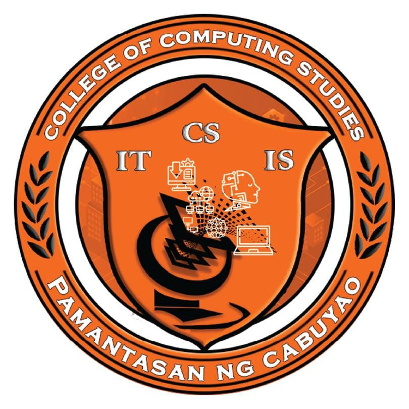

Republic of the Philippines
University of Cabuyao
(Pamantasan ng Cabuyao)
College of Computing Studies
Katapatan Mutual Homes, Brgy. Banay-banay, City of Cabuyao, Laguna, Philippines 4025
IKIGAI: THE JAPANESE SECRET TO A LONG AND HAPPY LIFE
Ikigai is a Japanese concept that roughly translates to "a reason for being" or " a reason to wake up in the morning". It encompasses finding joy, purpose, and fulfillment in life. The concept suggests that by identifying and nurturing the intersection of four elements, individuals can lead a fulfilling and meaningful life. These elements are:
- What you love (your passion)
- This refers to activities, hobbies, or pursuits that bring you joy and fulfillment.
- It could be anything from painting to gardening to playing music
- What you are good at (your vocation)
- This involves recognising your strengths, skills and talents.
- It's about understanding what you excel at and what comes naturally to you.
- What the world needs (your mission)
- This aspect emphasizes contributing to the greater good, making a positive impact or serving others in some capacity.
- It involves identifying needs or problems in the world that resonate with you and finding ways to address them.
- What you can be paid for (your profession)
- This relates to finding a career or vocation that allows you to earn a living while also aligning with your passions, strengths and values.
The idea behing ikigai is that true fulfillment and happiness come from finding balance and harmony among these four elements. It's about finding a purpose-driven life that integrates personal fulfillment with societal contribution and financial stability. By living in alignment with their ikigai, individuals can experience a sense of meaning, satisfaction, and longevity.